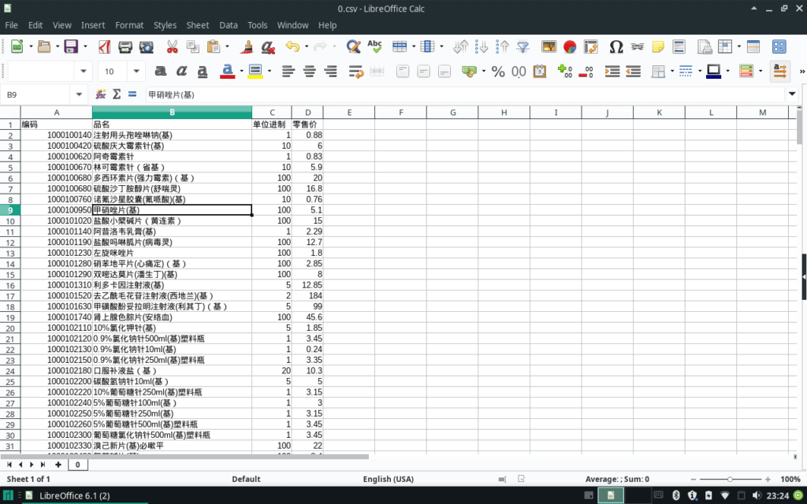
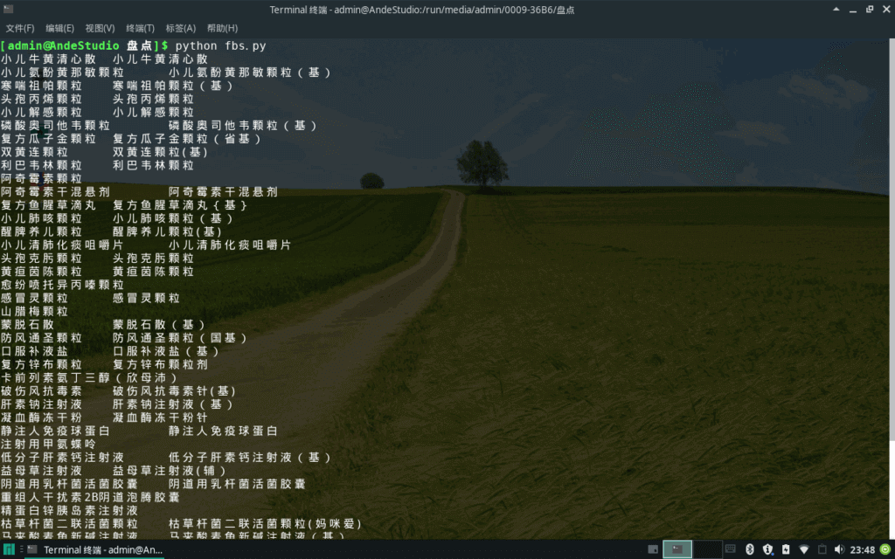

革新记之药品管理-按父串生成子串列表
情景分析：
样表为参照表的子集，其条目大部分是参照表的子串，少些则不是，如何将这份样表按参照表的条目重新生成？
参照表：

样表：
算法分析：
1.遍历样表条目，与参照表比对，若为子串则按参照表条目输出，不为子串者原样输出并加提示。
2.对加提示的条目手工修改。
代码演示：
1 | #fbs.py fatherStrBirthSonStr |
2 | #ande.stduio (c) 2019-06-17 21:50:08 |
3 | |
4 | import numpy as np |
5 | |
6 | std = np.loadtxt("0.csv", delimiter=",", usecols=(1), dtype=str, skiprows=1, unpack=True, encoding='utf8')#参照表 |
7 | smp = np.loadtxt("4.csv", delimiter=",", usecols=(0), dtype=str, skiprows=1, unpack=True, encoding='utf8')#样表 |
8 | |
9 | for i in range(len(smp)): |
10 | print(smp[i], end="\t") |
11 | for j in range(len(std)): |
12 | if std[j].find(smp[i]) != -1: |
13 | print(std[j], end="") |
14 | #else: |
15 | #print('0\t' + smp[i])#此流程不可行，因第二遍历多数将进入此条件，取巧的办法是在第一遍历时就执行此流程，然后根据第二遍历真条件反筛选出假条件 |
16 | print() |
运行结果：
